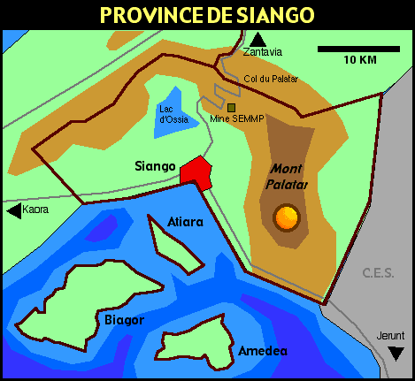

République de Prya
PROVINCE DE SIANGO
GEOGRAPHIE
•
Ville de Siango
• Lac d'Ossia
• Mont Palatar
• Côte de l'ouest
• Côte du sud
• Atiara
• Biagor
• Amedea
HABITANTS
• Gouverneur
• Citoyens
• Siango (ML province)
LEGISLATION
•
Constitution
•
Lois nationales
• Lois locales
SPORTS
•
Océanique de Siango
•
Golf de Siango
•
Circuit de Siango

Siango est une des quatre provinces de la
République de Prya
ENTREPRISES
•
SEMMP
•
Cocoil
• PluClean
•
Sutra
• Oren
•
La Pyramide
•
Hôtel des Sirènes
• C-Immo
•
Imsiang
•
Télescope
•
Golf de Siango
•
Transac
•
Ecoprya (ML éco.)
TRANSPORTS
• Immatriculations
• Hoverport
•
Salon de l'Auto 2002
CULTURE
•
Pryacharts
PROVINCES
•
Kaora
•
Siango
•
Tindali
•
Zantavia